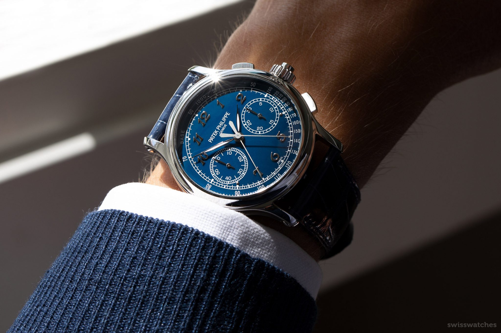
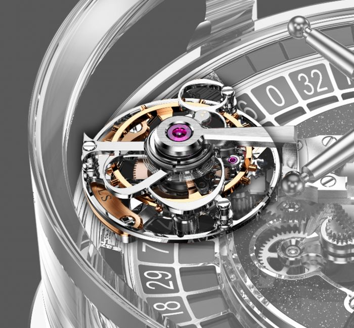
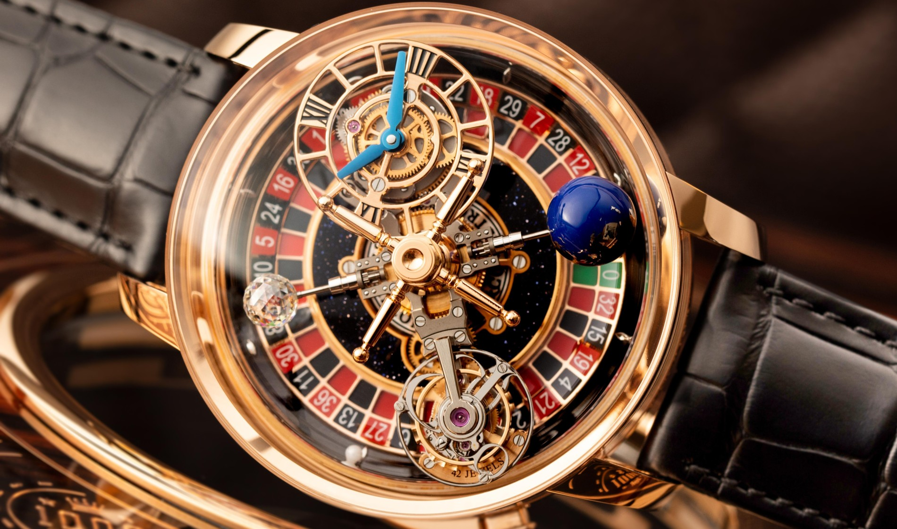
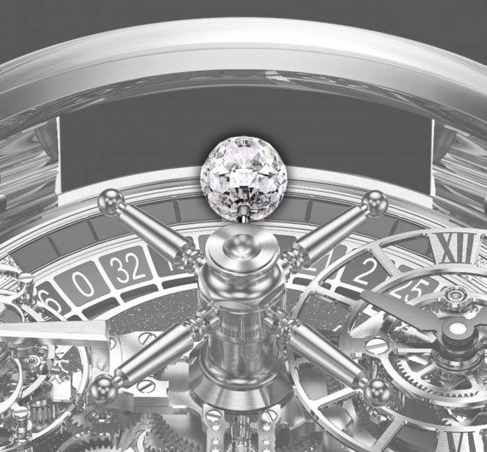
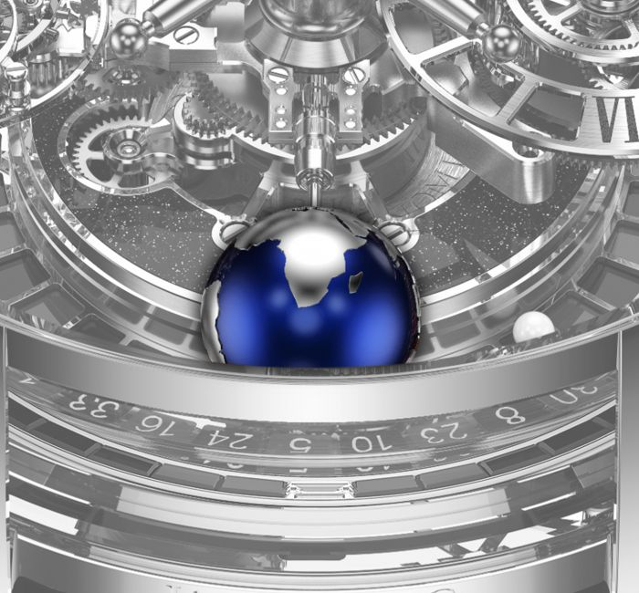
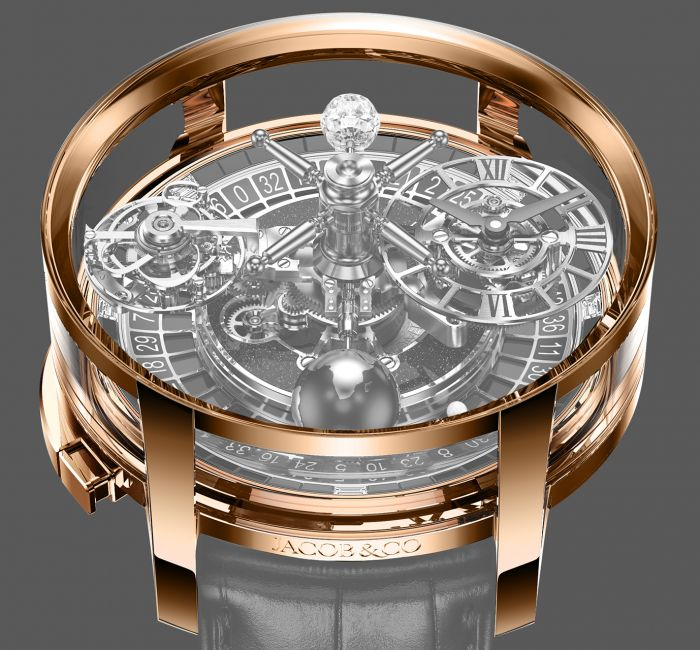
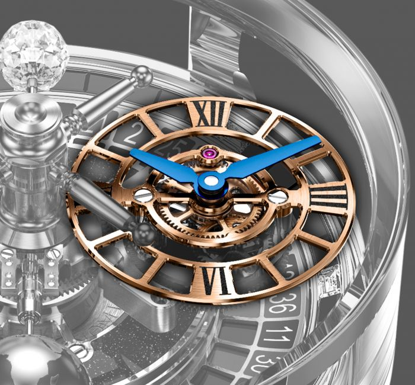

PATEK PHILIPPE 5370P - GRANDES COMPLICATIONS

CHR 29-535 PS REMONTAGE MANUEL
Le chronographe à rattrapante référence 5370 prend une touche très contemporaine avec un nouveau cadran bleu revivifiant la tradition Patek Philippe des cadrans en émail Grand Feu.
Reflets d’un instrument à la vocation technique, les affichages présentent une lisibilité optimale.
Le mouvement se distingue par son alliance de classicisme et d’innovation ainsi que par son mécanisme de rattrapante retravaillé.
L’élégant boîtier en platine est doté d’une lunette concave et de flancs creusés et satinés.
-Chronographe à rattrapante.
-Compteur 30 minutes. Petite aiguille de seconde.
-Diamètre : 29,6 mm.
-Epaisseur : 7,1 mm.
-Nombre de composants : 312. Rubis : 34.
-Réserve de marche avec chronographe arrêté : min. 55 h - max. 65 h.
-Balancier : Gyromax®.
-Alternances/heure : 28800 (4 Hz).
-Spiral : Breguet. Signe distinctif : Poinçon Patek Philippe.
MONTRE
-Mouvement mécanique à remontage manuel.
-Calibre CHR 29‑535 PS. Chronographe à rattrapante.
-Compteur 30 minute instantané.
-Petite aiguille de seconde.
CADRAN
-Émail Grand Feu bleu, chiffres Breguet appliques or.
-Plaque de cadran en or 18 ct.
-Échelle tachymétrique.
BOÎTIER
-Platine.
-Fond verre saphir et fond plein interchangeables.
-Etanche à 30 m.
-Diamètre du boîtier: 41 mm.
-Epaisseur: 13,56 mm.
BRACELET
-Cuir d’alligator écailles carrées, cousu main, bleu crépuscule brillant.
-Boucle déployante.
ASTRONOMIA CASINO WITH BLACK DIAMOND OUTER RIM
MOUVEMENT TOURBILLON DEUX AXES EXCLUSIF

Alors que le tourbillon a été inventé à l'origine pour être une cage rotative à axe unique pour porter l'organe réglant d'une montre de poche mécanique pour des performances de chronométrage améliorées, l'Astronomia Tourbillon amène cette invention vieille de 224 ans à des niveaux époustouflants de raffinement et de complexité modernes.
Le tourbillon à double axe de l'Astronomia Casino est à la pointe de l'horlogerie moderne.
La cage délicatement décorée du tourbillon volant renferme le balancier, le spiral, la roue d'échappement et un certain nombre d'autres composants d'une importance cruciale. Caractérisé par cette cage ajourée, cet exceptionnel tourbillon tourne sur deux axes simultanément.
Il s'agit d'une constellation de composants superbement finis qui, lorsqu'ils sont assemblés et réglés de manière experte, permettent au JCAM10 de conserver une heure précise tout au long de sa réserve de marche de 60 heures.
Une rotation complète sur le 1er axe prend exactement 60 secondes, comme un clin d'œil au traditionnel tourbillon mono-axe. Le 2ème axe de rotation est rendu possible par la plateforme rotative 10 minutes à quatre bras de l'Astronomia Tourbillon.
Cela donne un nouveau regard audacieux sur la façon dont les tourbillons peuvent fonctionner, lorsqu'ils sont conçus avec des technologies de pointe ultramodernes et un héritage horloger intemporel à l'esprit.
TABLE DE ROULETTE ANIMÉE

Il n'y a jamais eu auparavant de garde-temps à grande complication avec une roue de roulette qui tourne, permettant aux propriétaires de jouer à leur jeu de hasard préféré à tout moment.
Bien que le casino Astronomia soit simple à utiliser et à apprécier, les solutions techniques pour le faire fonctionner de manière transparente ont pris plus d'un an de temps de développement.
Séparée du mouvement par une glace saphir, la bille en céramique peut rebondir à l'abandon sans risquer d'impacter le fonctionnement du garde-temps.
De plus, dans cette version, l'anneau autour de la roulette est serti de 48 diamants noirs taille baguette.
La meilleure façon de jouer est de placer le casino Astronomia sur une surface plane, de lancer la roulette et de placer vos paris.
DIAMANT JACOB-CUT À 288 FACETTES

Le diamant Jacob-Cut commence comme un diamant brut beaucoup plus gros.
Tout d'abord, un diamant brut suffisamment gros doit être trouvé, et la pureté, la clarté et la couleur doivent être de la plus haute qualité à l'intérieur comme à l'extérieur, et il ne peut y avoir d'inclusions.
S'ils commencent à tailler le diamant et trouvent une inclusion, la pièce entière sera ruinée.
Ensuite, le diamant est coupé à la machine en une forme ronde, de taille proche du diamant final.
Puis, le tailleur de pierres précieuses façonne la pierre à la main, en taillant les 288 facettes une à une.
Cela doit être fait lentement et avec précaution, car la pierre doit être parfaitement ronde et symétrique.
Le danger est que la pierre devienne ovale et non ronde.
Pour être utilisé dans la collection Astronomia, le diamant Jacob-cut doit être complètement rond et peser exactement autant que les trois autres satellites (affichage de l'heure, tourbillon trois axes, globe en magnésium).
Pendant le processus, si le tailleur de pierres précieuses exerce un peu trop de pression lors de l'ajout des facettes, une trop grande partie du diamant sera coupée et la boule finira par être plus petite que le diamètre souhaité.
Le processus de coupe prend au moins deux semaines de travail dévoué et minutieux.
Pour fabriquer le diamant final d'un carat, Jacob-cut avec 288 facettes, plus de la moitié du diamant brut initial sera taillé.
La complexité de couper les 288 facettes à la main et de s'assurer que tout est symétrique et que le diamant est absolument rond, est ce qui rend le diamant Jacob & Co. utilisé dans la collection Astronomia si spécial.
LE GLOBE DE MAGNÉSIUM

Le globe est en magnésium laqué bleu avec des continents en or blanc pour assurer la cohérence du poids, car les quatre satellites doivent avoir exactement le même poids.
Le globe tourne sur lui-même en 30 secondes, tout en faisant le tour du cadran en 10 minutes.
BOITIER ET DIAMANTS NOIRS

Le boîtier de l'Astronomia Casino mesure 47 millimètres de diamètre et 24 millimètres d'épaisseur entre le point le plus élevé de son verre saphir spécialement bombé et le point le plus bas de son boîtier.
Fabriqué à partir d'or rose 18 carats, le boîtier comporte quatre fenêtres en verre saphir installées sur toute la périphérie, permettant une visualisation sans entrave du spectaculaire calibre tourbillon à double axe et de la roue de roulette fonctionnelle.
L'anneau autour de la roulette est serti de 48 diamants noirs taille baguette
SOUS-CADRAN

Le sous-cadran d'affichage de l'heure de l'Astronomia Casino est piloté par un système différentiel infinitésimal qui lui permet de toujours rester dans la bonne position 12/6 lorsqu'il tourne avec la plate-forme à quatre bras du mouvement à l'avant de l'Astronomia.
Les chiffres romains sur le cadran squelette sont gravés à la main et remplis de laque noire, tandis que les aiguilles finies à la main apparaissent en bleu pistolet métallisé.